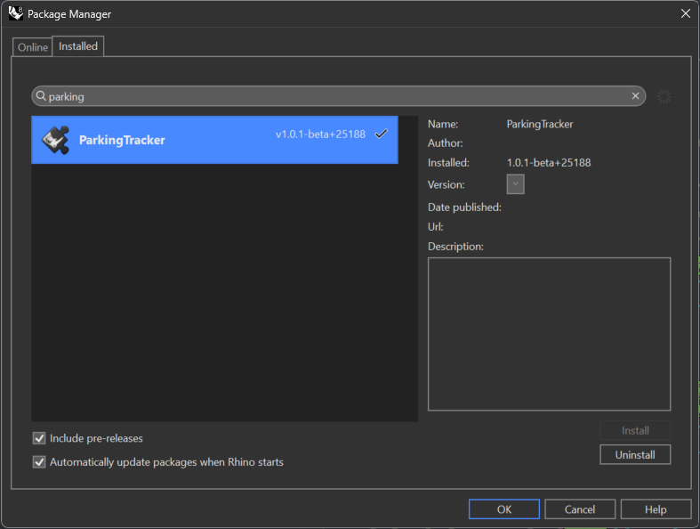
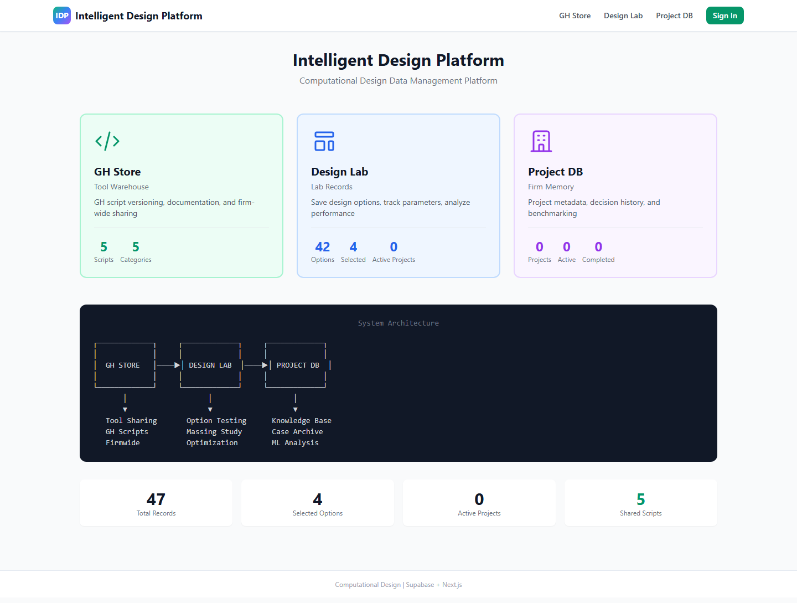

Dongwoo Suk
Computational Design Specialist
← → ↑ ↓ or click arrows to navigate
Education & Experience
Education
- M.Arch I — SCI-Arc (2018)
- BFA Interior Design — Pratt Institute (2015)
Certifications
- AIA Associate Member
- LEED Green Associate
- McNeel Grasshopper Level 1
- AI for Architects (ELVTR)
Experience
- Steinberg Hart (2022–Present)
Computational Design Specialist / ADG Lead
~10 members across 6 offices - The Code Solution (2019–2021)
Junior Designer - Oyler Wu Collaborative (2017, 2019)
Intern Designer — Design & fabrication for award-winning pavilion / exhibition
Awards & Technical Skills
Project Awards (6)
- PCBC Gold Nugget Grand Award — Best 55+ Community (Ellore)
- PCBC Gold Nugget Merit ×4 — Mixed-Use, Community, Multi-Family (Ellore + The Clara)
- SHN Architecture & Design Award — Best Assisted Living, 1st Place (Ellore)
- SVBJ Structures Award — Market-Rate Residential (The Clara)
- J. Irwin & Xenia S. Miller Prize — Winning Design, Exhibit Columbus (The Exchange)
- Mies Crown Hall Americas Prize (MCHAP) — Selected Project, IIT (The Exchange)
Individual Awards (3)
- IIDA NY Student Design Awards 2015 — Winner
- Archiol Competition 2025 — Elevated Communities, 1st Place
- Archstorming 2026 — Senegal Secondary School, Semi-Finalist
Technical Skills
- Parametric: Rhino, Grasshopper
- BIM: Revit, Rhino.Inside.Revit, Dynamo
- Programming: Python, C#, GhPython
- AI: LLM Integration, RAG, Vector DB, Vision AI
- Full-Stack: Next.js, TypeScript, PostgreSQL
Grasshopper Python
Parametric Design Automation & Optimization Scripts
Grasshopper Python
Rhino 8 CPython Scripts for AEC Workflows
- Rhino 8 CPython 3 + Grasshopper integration
- Excel data ↔ Rhino geometry automation
- Facade panelization & vector analysis
- Evolutionary optimization (Wallacei)
- Elefront attribute & layer management


Projects


Building Massing Generator
Parametric Automation + Evolutionary Optimization


Building Massing Generator
Real-Time Massing Generation — Live Demo
Building Massing Generator
Grasshopper Definition & Unit-Mix Studies
- Phased GH Python Pipeline — Phase 1–7 components: site setup → massing → unit mix → placement
- Performance Calc & Constraint Validation — each phase scored and checked against targets
- Summary Data Output — yield, unit-mix, and target-vs-placement reports per option


Building Massing Generator
Wallacei Evolutionary Optimization
- Multi-Objective GA — Wallacei evolves thousands of massing options across generations
- Fitness Objectives — unit count, unit-type mix, and floor-area efficiency
- Pareto Front — surfaces trade-off-optimal options instead of a single fixed answer
Facade Panelization Tool
GH-Driven Panel Generation for Complex Facades

Facade Panelization Tool
Real-time Facade Panelization
Facade Panelization Tool
Panelization Design Options Preset
- Panelization Design Options Preset — panel grid alignment adapts regardless of facade size
- Typical and Corner panel classification — Corner panels apply Miter Cut at face intersections


Facade Panelization Tool
Panel Swap Options Preset
- Rhino Block / Custom Modeling or Revit Curtain Panel Family — native geometry or Revit-exported geometry placed directly as block
- Morph Component / Rhino.Common API — procedurally generated via script
- Corner Miter Cut Morph — minimizes deformation at panel intersections for clean corner geometry


Panel Rationalization
Kit-of-Parts Mold Optimization for Facade Fabrication


Panel Rationalization
Cal Poly Building C — Kit Assembly Animation
- Mold Rationalization — clusters 784 panels into 231 reusable molds (91% from reused molds) to cut fabrication cost
- Kit-of-Parts Catalog — 70 reused mold types + 53 one-off types, shared across building faces
- Agent-Generated Workflow — Rhino MCP builds the parametric facade kit; Pareto trade-off and reuse map for review

Panel Rationalization
Live 3D Kit Viewer — drag to orbit, click any panel to spotlight its mold
Panel Rationalization — Analysis Dashboard
Mold Reuse Dashboard — 784 panels cast from 231 molds (91% reused)
Parking Stall Tracker
Excel-Driven Parking Data Visualization in Rhino
- Excel data → Rhino color-coded geometry via Grasshopper + Elefront
- Type (ADA / Compact / EV / Standard) & status (Available / Occupied) classification
- Enables client-driven updates without designer rework
Applied: 188 West Saint James

Parking Stall Tracker: Excel ↔ Rhino Live Sync
Client-Driven Data Workflow
- Live data source: client edits Excel → instant Rhino update via GH script
- Data fields: stall ID · client label · level · type · sub-type · dimension · status
- Mode toggle visualizes Type overview or Status (Available / Occupied) on Rhino plan
Parking Stall Tracker: Rhino Plugin
Packaged for Anyone — No Grasshopper Required
- GH script packaged as intuitive Rhino plugin (UI/UX-friendly)
- Distributed via Rhino Package Manager — firm-wide one-click install
- Designer-ready: no Grasshopper knowledge needed to operate

Rhino.Inside.Revit
Bridging Parametric Design and BIM Documentation


Rhino.Inside.Revit Workflow
Bridging Parametric Design and BIM Documentation
- Rhino.Inside.Revit: Grasshopper runs natively inside Revit
- Real-time bidirectional sync between parametric design and BIM
- Full Revit API access from Grasshopper — no file exchange


Case Study: 5x5 Building
Full Building RIR Pipeline — Rhino to Revit
- GH Parametric Design to Seamless Revit Workflow
- GH Data Management for Revit BIM Data Conversion
- From Repetitive Modeling to Rapid Design Iteration

 Rhino
Revit
Rhino
Revit

5x5 Building: Parametric Design Modeling
Conceptual Massing Studies — Parametric Design Iterations
- Parameter-driven grid-based module box generation
- Floor-level-based extrusion
- Massing formation via module rotation
5x5 Building: Data Management
GH Data to BIM Management
- Beyond geometry: every module carries structured data (unit ID, type, parameters)
- Hidden back-end data drives both design and documentation
- Color coding + unit number tags visualize the underlying data structure


Design Option
GH Data Management
5x5 Building: Component Breakdown
Lossless GH → Revit Conversion via Rhino.Inside.Revit
- Clean, well-organized Grasshopper geometry data pipeline
- Sequential assembly: Floors → Cores → Structural Columns → Walls → Windows
- Zero data loss — parameters, types & categories fully preserved in Revit
5x5 Building: Revit Facade Development
Design Massing → Envelope → Panelization → Panel Patterns

5x5 Building: Documentation
BIM Documentation from Conceptual Design
- Automated floor plan details: interior walls, doors, unit room numbers
- Concept-to-documentation pipeline without manual re-drafting
- Component breakdown (Core / Corridor / Interior Walls) & elevation views


5x5 Building: Concept & Rendering
AI-Powered Visualization via Nano Banana
- Parametric massing output → AI rendering in minutes, not hours
- Rapid concept & mood exploration without traditional render setup


Case Study: Cal Poly Student Housing
Cal Poly — Largest Modular in U.S. (4,200 beds, $1.2B)
- Revit Model Group population via Rhino.Inside.Revit
- RIR workflow demonstration — not a project deliverable


Cal Poly: Parametric Box Displacement
Curve-Driven Modular Unit Displacement
- GH-driven box module displacement along reference curve
- Real-time response to control-point manipulation

Cal Poly: Documentation Views
Revit Documentation from Rhino.Inside.Revit Pipeline


Case Study: Adaptive Curtain Wall
Parametric Facade Panel System — RIR to Revit
- Revit adaptive component panels
- Grasshopper parametric control via Rhino.Inside.Revit
- Sun-analysis-driven panel type variation


Adaptive Curtain Wall: Parametric Panel Control
Color-coded Panel Visualization — Distance-Driven Pattern
- Panel geometry parametrically driven by attractor distance
- Color-coded panel visualization driven by distance data


Adaptive Curtain Wall: Sun Hour Analysis
Sun Hour Analysis → Revit Family Parameters
- Per-panel sun exposure data from reference attractor
- Panel form driven by sun exposure across facade
- Data reflected in Revit family parameters via Rhino.Inside.Revit

Adaptive Curtain Wall: Revit Documentation
Automated Axon, Plan & Elevation from Parametric Model


Case Study: Frit Pattern Design
Parametric Facade Pattern — Concept to Fabrication
- Final design review items during the CD Phase
- Grasshopper-driven pattern generation
- Revit documentation for fabrication


Frit Pattern: Concept References
Morse-Code-Embedded Pattern Studies


Frit Pattern: Parametric Generation
Grasshopper-Based Pattern Logic on Facade Geometry
Frit Pattern: Revit Documentation
Elevation & Details for Fabrication
- Automated elevation output
- Filtering panel types to apply the pattern via RIR
- Shop-drawing-ready from parametric model


Open-Source Development
AEC Tools & AI-Powered Applications

Open-Source Development
AI-Driven AEC Tool Development
- AI-driven MVP development for AEC tools
- LLM integration (RAG · Vector DB · Tool Use)
- Rhino/Grasshopper plugin packaging & distribution
- MCP server infrastructure for AEC workflows
- Full-stack applications (Next.js · PostgreSQL · Supabase)

Projects

Reticle
Grasshopper Plugin — Center-Based Division for Curves & Surfaces

Divide Centered: Why?
Default GH Components vs Reticle
Problem: Default Components

Divide Curve
- Count-based — no dimensional control
- Not suitable when exact spacing is required (architectural dimensions)
- Multiple curves → each gets different segment sizes
Divide Distance / Length
- Always start from one end → asymmetric remainder at far end
- Cumulative error on curved geometry
- Similar results despite different calculation methods
Solution: Divide Centered

- Divides from center outward
- Symmetric remainders on both ends
- Exact distance-based spacing across any curve length
- Consistent segments across multiple curves
- Toggle for including/excluding endpoints
Divide Centered: Demo
Center-based curve division in action
Divide Surface Centered: Why?
Default GH Components vs Reticle
Problem: Default Components

Divide Surface / Isotrim
- Count-based (U/V count) — no distance control
- No full control of output sub-surfaces in equal size when input surfaces are different sizes
- No equal spacing on curvature surfaces
As a result ↓
- Requires multi-component workaround to get measurable outcomes
- Complex data tree management
Solution: Divide Surface Centered

- UV center-based division
- Symmetric remainders on all edges
- Sub-Surfaces output (ready for paneling)
- U/V Remainder values as output
- Independent endpoint toggles (Eu, Ev)
- Single component replaces multi-step workflow
Divide Surface Centered: Demo
Center-based surface division in action
Rhino Grasshopper MCP
AI-Powered Design Assistant with ML Auto-Layout
- ML Auto-Layout — DBSCAN, K-means clustering
- Pattern Learning — Adapts to user preferences
- Real-time Bridge — TCP Socket to Rhino
- Performance Prediction — Optimization suggestions
- Wire Crossing Minimization — Graph algorithms
github.com/dongwoosuk/rhino-grasshopper-mcp

Rhino Grasshopper MCP
Conversational Massing — Generate by Chat
- Plain-English Prompts — describe intent, MCP generates massing in Rhino
- Evolutionary Workflow — fresh / lock / next over a tower grid
- No Manual Modeling — geometry built live via the agent
Rhino Grasshopper MCP
Live Bridge — Claude builds & edits GH definitions
- TCP Socket Bridge — real-time link between Claude and Rhino/Grasshopper
- Canvas-Aware — reads live GH canvas state, components & wires
- Builds & Executes — wires components via GH SDK, runs Python in Rhino

Rhino Grasshopper MCP
ML-Driven Component Auto-Layout
- Clustering — DBSCAN / K-means groups related components
- Wire-Crossing Minimization — graph algorithms for clean canvases
- Learns Preferences — adapts to your layout style over time

Design Intelligence Platform
Cloud Design Data Platform — Grasshopper ↔ Supabase
- Three Modules — GH Store (tool sharing), Design Lab (option tracking), Project DB
- Cloud Data Infrastructure — Grasshopper ↔ Supabase (PostgreSQL), live save / restore
- Web Dashboard — Next.js + TypeScript, firm-wide access
github.com/dongwoosuk/design-intelligence-platform

Design Intelligence Platform
AI Workflow Composition — Store → Builder → Canvas
- GH Store — versioned script warehouse; browse & reuse firm-wide tools
- AI Builder — describe a goal in plain language; AI decomposes it into logical steps & matches scripts
- Node Canvas — compose scripts as a connected graph with typed inputs / outputs
Store · Builder · Canvas
AEC Outlook MCP
AEC-Specialized Email Intelligence with Vision AI
Grasshopper Quality Analyzer
Automated Code Quality for Computational Design
LEED AP Study Application
AI-Powered Exam Preparation Platform
- AI Quiz — Gemini + RAG generation, instant correct/incorrect explanations
- AI Study Guide — credit-by-credit summaries across LEED categories
- Flashcards & Progress — spaced repetition + session analytics
- Full-Stack PWA — Next.js + Supabase, responsive mobile + desktop
Desktop
Mobile (PWA)